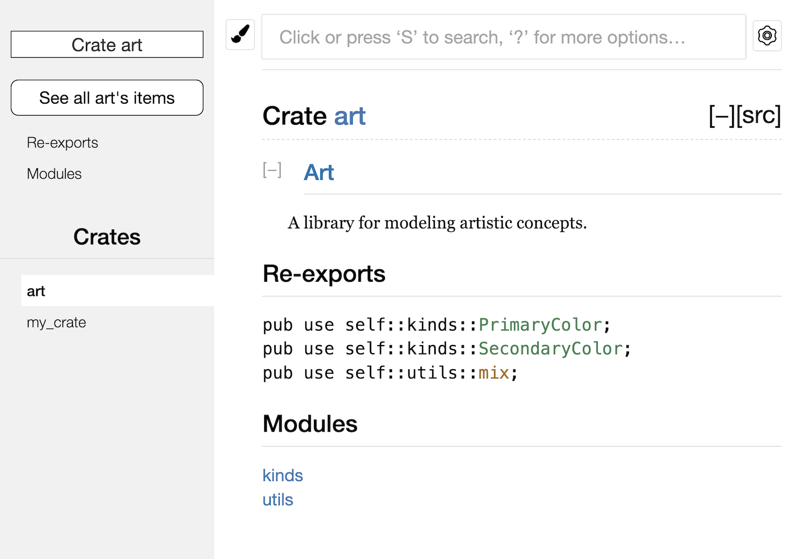

将 crate 发布到 Crates.io
ch14-02-publishing-to-crates-io.md
我们曾经在项目中使用 crates.io 上的包作为依赖，不过你也可以通过发布自己的包来向他人分享代码。crates.io 上的 crate 注册表会分发你包的源代码，因此它主要托管开源代码。
Rust 和 Cargo 提供了一些功能，让你发布的包更容易被他人找到和使用。接下来我们会介绍其中一些功能，然后说明如何发布包。
编写有用的文档注释
准确的包文档有助于其他用户理解如何以及何时使用它们，所以花一些时间编写文档是值得的。第三章中我们讨论了如何使用双斜杠 // 注释 Rust 代码。Rust 也有特定的用于文档的注释类型，通常被称为文档注释（documentation comments），它们会生成 HTML 文档。这些 HTML 展示公有 API 文档注释的内容，它们意在让对库感兴趣的程序员理解如何使用这个 crate，而不是它是如何被实现的。
文档注释使用三条斜杠 ///，而不是两条斜杠，并且支持使用 Markdown 标记来格式化文本。将文档注释放在它所说明的项之前。示例 14-1 展示了名为 my_crate 的 crate 中一个 add_one 函数的文档注释。
文件名：src/lib.rs
/// Adds one to the number given.
///
/// # Examples
///
/// ```
/// let arg = 5;
/// let answer = my_crate::add_one(arg);
///
/// assert_eq!(6, answer);
/// ```
pub fn add_one(x: i32) -> i32 {
x + 1
}示例 14-1：一个函数的文档注释
这里，我们描述了 add_one 函数的功能，接着以 Examples 为标题开始了一个小节，并给出了展示如何使用 add_one 函数的代码。可以运行 cargo doc 来根据这些文档注释生成 HTML 文档。这个命令会运行 Rust 自带的 rustdoc 工具，并将生成的 HTML 文档放到 target/doc 目录中。
为了方便起见，运行 cargo doc --open 会为当前 crate 的文档构建 HTML（以及它所有依赖的文档），并在浏览器中打开结果。定位到 add_one 函数时，你会看到文档注释中的文本是如何被渲染的，如图 14-1 所示：

图 14-1：add_one 函数的文档注释 HTML
常用章节
示例 14-1 中使用了 # Examples Markdown 标题在 HTML 中创建了一个以 “Examples” 为标题的部分。其他一些 crate 作者经常在文档注释中使用的部分有：
- Panics：函数在什么情况下可能会
panic!。不希望程序 panic 的调用者应确保不会在这些情况下调用该函数。 - Errors：如果函数返回
Result，说明可能出现哪些错误，以及什么条件会导致返回这些错误，会有助于调用者编写代码，以不同方式处理不同种类的错误。 - Safety：如果调用该函数是
unsafe的（我们会在第二十章讨论不安全代码），这里应解释为什么它是不安全的，并说明函数要求调用者维持哪些不变式。
大多数文档注释不需要包含所有这些章节，但这是一份很好的检查清单，可以提醒你关注用户会想了解的内容。
文档注释作为测试
在文档注释中添加示例代码块，有助于展示如何使用你的库，而且还有一个额外的好处：运行 cargo test 时，文档中的示例代码也会作为测试运行！没有什么比带示例的文档更好了，但也没有什么比示例失效的文档更糟糕了。如果我们对示例 14-1 中 add_one 函数的文档运行 cargo test，会在测试结果中看到如下内容：
Doc-tests my_crate
running 1 test
test src/lib.rs - add_one (line 5) ... ok
test result: ok. 1 passed; 0 failed; 0 ignored; 0 measured; 0 filtered out; finished in 0.27s
现在，如果我们修改函数或示例中的任意一方，使示例里的 assert_eq! 触发 panic，然后再次运行 cargo test，就会看到文档测试捕获到了示例与代码不同步的问题！
注释包含项的结构
//! 这种文档注释风格为“包含这些注释的项”添加文档，而不是为“位于这些注释之后的项”添加文档。我们通常在 crate 根文件（按惯例是 src/lib.rs）或模块内部使用这种文档注释，为整个 crate 或整个模块编写说明。
例如，为了添加描述包含 add_one 函数的 my_crate crate 的用途的文档，我们可以在 src/lib.rs 文件开头加入以 //! 开头的文档注释，如示例 14-2 所示：
文件名：src/lib.rs
//! # My Crate
//!
//! `my_crate` is a collection of utilities to make performing certain
//! calculations more convenient.
/// Adds one to the number given.
// --snip--
///
/// # Examples
///
/// ```
/// let arg = 5;
/// let answer = my_crate::add_one(arg);
///
/// assert_eq!(6, answer);
/// ```
pub fn add_one(x: i32) -> i32 {
x + 1
}示例 14-2：my_crate crate 整体的文档
注意，最后一行以 //! 开头的注释后面没有任何代码。因为我们使用的是 //! 而不是 ///，所以这里记录的是“包含这条注释的项”的文档，而不是“紧随这条注释之后的项”的文档。在这里，这个项就是 src/lib.rs 文件，也就是 crate 根。这些注释描述的是整个 crate。
运行 cargo doc --open 后，这些注释会显示在 my_crate 文档首页的 crate 公有项列表上方，如图 14-2 所示：

图 14-2：包含 my_crate 整体描述的注释所渲染的文档
项内部的文档注释特别适合用来描述 crate 和模块。使用它们来解释这个容器整体的目的，可以帮助用户理解 crate 的组织方式。
导出实用的公有 API
公有 API 的结构是你发布 crate 时主要需要考虑的。crate 用户没有你那么熟悉其结构，并且如果模块层级过大他们可能会难以找到所需的部分。
第七章介绍了如何使用 pub 关键字使项公开，以及如何使用 use 关键字将项引入作用域。不过，在你开发 crate 时对你来说合理的结构，对用户而言可能并不方便。你可能想把结构体组织成一个包含多层的层级结构，但想使用你定义在深层级中的某个类型的人，可能很难发现它的存在。他们也可能会厌烦不得不写 use my_crate::some_module::another_module::UsefulType;，而不是更简单的 use my_crate::UsefulType;。
好消息是，如果这种结构对外部用户来说并不方便，你也不必重新安排内部组织。你可以使用 pub use 来重导出项，从而建立一个与私有结构不同的公有结构。重导出（re-export） 会把某个位置的公有项在另一个位置再次公开，就好像它原本就定义在那里一样。
例如，假设我们创建了一个名为 art 的库，用来建模艺术概念。在这个库里，有两个模块：kinds 模块包含两个枚举 PrimaryColor 和 SecondaryColor，utils 模块包含一个名为 mix 的函数，如示例 14-3 所示：
文件名：src/lib.rs
//! # Art
//!
//! A library for modeling artistic concepts.
pub mod kinds {
/// The primary colors according to the RYB color model.
pub enum PrimaryColor {
Red,
Yellow,
Blue,
}
/// The secondary colors according to the RYB color model.
pub enum SecondaryColor {
Orange,
Green,
Purple,
}
}
pub mod utils {
use crate::kinds::*;
/// Combines two primary colors in equal amounts to create
/// a secondary color.
pub fn mix(c1: PrimaryColor, c2: PrimaryColor) -> SecondaryColor {
// --snip--
unimplemented!();
}
}示例 14-3：一个库 art 其组织包含 kinds 和 utils 模块
图 14-3 展示了 cargo doc 为这个 crate 生成的文档首页。

图 14-3：包含 kinds 和 utils 模块的库 art 的文档首页
注意 PrimaryColor 和 SecondaryColor 类型、以及 mix 函数都没有在首页中列出。我们必须点击 kinds 或 utils 才能看到它们。
依赖这个库的另一个 crate 需要使用 use 语句，把 art 中的项引入作用域，同时必须指定当前定义的模块结构。示例 14-4 展示了一个使用 art crate 中 PrimaryColor 和 mix 的 crate：
文件名：src/main.rs
use art::kinds::PrimaryColor;
use art::utils::mix;
fn main() {
let red = PrimaryColor::Red;
let yellow = PrimaryColor::Yellow;
mix(red, yellow);
}示例 14-4：一个通过导出内部结构使用 art crate 中项的 crate
示例 14-4 中这段代码的作者，必须先弄清楚 PrimaryColor 在 kinds 模块中，而 mix 在 utils 模块中。art crate 的模块结构，对开发 art crate 的人来说比对使用它的人更有意义。这种内部结构并没有给想理解如何使用 art crate 的人提供有价值的信息，反而会带来困惑，因为用户必须先搞清楚该去哪里找需要的内容，还要在 use 语句中写出模块名。
为了从公有 API 中去掉内部组织细节，我们可以修改示例 14-3 中的 art crate，加入 pub use 语句，在顶层重导出这些项，如示例 14-5 所示：
文件名：src/lib.rs
//! # Art
//!
//! A library for modeling artistic concepts.
pub use self::kinds::PrimaryColor;
pub use self::kinds::SecondaryColor;
pub use self::utils::mix;
pub mod kinds {
// --snip--
/// The primary colors according to the RYB color model.
pub enum PrimaryColor {
Red,
Yellow,
Blue,
}
/// The secondary colors according to the RYB color model.
pub enum SecondaryColor {
Orange,
Green,
Purple,
}
}
pub mod utils {
// --snip--
use crate::kinds::*;
/// Combines two primary colors in equal amounts to create
/// a secondary color.
pub fn mix(c1: PrimaryColor, c2: PrimaryColor) -> SecondaryColor {
SecondaryColor::Orange
}
}示例 14-5：增加 pub use 语句重导出项
现在，cargo doc 为这个 crate 生成的 API 文档会在首页列出这些重导出项及其链接，如图 14-4 所示，这使 PrimaryColor、SecondaryColor 和 mix 更容易被找到。

图 14-4：列出重导出项的 art 文档首页
art crate 的用户仍然可以像示例 14-4 那样看到并使用示例 14-3 中的内部结构，也可以使用示例 14-5 中更方便的结构，如示例 14-6 所示：
文件名：src/main.rs
use art::PrimaryColor;
use art::mix;
fn main() {
// --snip--
let red = PrimaryColor::Red;
let yellow = PrimaryColor::Yellow;
mix(red, yellow);
}示例 14-6：一个使用 art crate 中重导出项的程序
在存在很多嵌套模块的情况下，使用 pub use 将类型重导出到顶层，会显著改善使用这个 crate 的体验。pub use 的另一个常见用法，是把当前 crate 的某个依赖中的定义重新导出，让那个 crate 的定义成为你这个 crate 公有 API 的一部分。
创建有用的公有 API 结构更像是一门艺术，而不是科学；你可以不断迭代，找到最适合用户的 API。选择 pub use 能让你在 crate 内部结构的组织方式上保持灵活，并将其与你呈现给用户的结构解耦。可以看看你安装过的一些 crate 的源码，观察它们的内部结构是否和公有 API 不同。
创建 Crates.io 账号
在发布任何 crate 之前，你需要在 crates.io 上创建账号并获取一个 API token。为此，请访问 crates.io 首页，并通过 GitHub 账号登录。（目前 GitHub 账号仍然是必需的，不过未来这个网站可能会支持其他注册方式。）登录之后，前往 https://crates.io/me/ 的账户设置页面获取 API key。然后运行 cargo login 命令，并在提示时粘贴你的 API key，如下所示：
$ cargo login
abcdefghijklmnopqrstuvwxyz012345
这个命令会把你的 API token 告诉 Cargo，并将其保存在本地的 ~/.cargo/credentials 文件中。注意，这个 token 是一个秘密，不应该与任何人共享。如果你因为任何原因泄露了它，应立即到 crates.io 撤销并重新生成一个 token。
向新 crate 添加元数据
比如说你已经有一个希望发布的 crate。在发布之前，你需要在 crate 的 Cargo.toml 文件的 [package] 部分增加一些本 crate 的元数据（metadata）。
首先，crate 需要一个唯一的名称。虽然在本地开发 crate 时，你可以随意命名，但 crates.io 上的 crate 名称遵循先到先得的原则。一旦某个 crate 名称已经被占用，就没有其他人能再用这个名称发布 crate。请搜索你想使用的名称，确认它是否已被占用。如果没有，就把 Cargo.toml 中 [package] 里的 name 字段改成你想发布时使用的名称，如下所示：
文件名：Cargo.toml
[package]
name = "guessing_game"
即使你选择了一个唯一的名称，如果此时尝试运行 cargo publish 发布该 crate 的话，会得到一个警告接着是一个错误：
$ cargo publish
Updating crates.io index
warning: manifest has no description, license, license-file, documentation, homepage or repository.
See https://doc.rust-lang.org/cargo/reference/manifest.html#package-metadata for more info.
--snip--
error: failed to publish to registry at https://crates.io
Caused by:
the remote server responded with an error (status 400 Bad Request): missing or empty metadata fields: description, license. Please see https://doc.rust-lang.org/cargo/reference/manifest.html for more information on configuring these fields
这个错误是因为我们缺少一些关键信息：关于该 crate 用途的描述，以及用户可以在什么许可条款下使用它。在 Cargo.toml 中添加一两句简短描述即可，因为它会在搜索结果中和你的 crate 一起显示。对于 license 字段，你需要填写一个许可证标识符值（license identifier value）。Linux 基金会的 Software Package Data Exchange (SPDX) 列出了可用的标识符。例如，如果要指定 crate 使用 MIT License，就添加 MIT 标识符：
文件名：Cargo.toml
[package]
name = "guessing_game"
license = "MIT"
如果你想使用 SPDX 中不存在的许可证，就需要把许可证文本放入一个文件中，将该文件包含到项目里，然后使用 license-file 指定该文件名，而不是使用 license 字段。
关于项目应采用何种许可证的建议超出了本书的范围。很多 Rust 社区成员选择与 Rust 本身相同的许可证，也就是双许可证 MIT OR Apache-2.0。这个例子也说明了，你可以用 OR 分隔多个许可证标识符，来为项目指定多个许可证。
那么，有了唯一的名称、版本号、由 cargo new 新建项目时增加的作者信息、描述和所选择的 license，已经准备好发布的项目的 Cargo.toml 文件可能看起来像这样：
文件名：Cargo.toml
[package]
name = "guessing_game"
version = "0.1.0"
edition = "2024"
description = "A fun game where you guess what number the computer has chosen."
license = "MIT OR Apache-2.0"
[dependencies]
Cargo 文档 还描述了其他可指定的元数据，它们可以帮助你的 crate 更容易被发现和使用！
发布到 Crates.io
现在，我们已经创建了账号、保存了 API token、为 crate 选好了名字，并填入了所需的元数据，你就可以发布了！发布 crate 会将该 crate 的某个特定版本上传到 crates.io 供他人使用。
发布 crate 时务必小心，因为发布是永久性的。对应版本无法被覆盖，其代码也无法被删除。crates.io 的一个主要目标，是充当代码的永久归档服务器，这样所有依赖 crates.io 上 crate 的项目都能一直正常工作。而如果允许删除版本，就无法实现这一目标。不过，可发布的版本号数量并没有限制。
再次运行 cargo publish 命令。这次它应该会成功：
$ cargo publish
Updating crates.io index
Packaging guessing_game v0.1.0 (file:///projects/guessing_game)
Verifying guessing_game v0.1.0 (file:///projects/guessing_game)
Compiling guessing_game v0.1.0
(file:///projects/guessing_game/target/package/guessing_game-0.1.0)
Finished `dev` profile [unoptimized + debuginfo] target(s) in 0.19s
Uploading guessing_game v0.1.0 (file:///projects/guessing_game)
至此，你已经把代码分享给 Rust 社区了，任何人都可以轻松地把你的 crate 加入自己的项目依赖中。
发布现有 crate 的新版本
当你修改了 crate 并准备发布新版本时，修改 Cargo.toml 中 version 的值。请使用语义化版本控制规则，根据修改的类型决定下一个版本号。然后再次运行 cargo publish 来上传新版本。
使用 cargo yank 从 Crates.io 撤回版本
虽然你不能删除 crate 的历史版本，但可以阻止未来的新项目把它加入依赖。这在某个版本因为某种原因损坏时会很有用。为此，Cargo 支持对某个版本执行撤回（yank）。
撤回某个版本会阻止新项目依赖这个版本，不过所有已经依赖它的项目仍然可以下载并继续依赖它。从本质上说，撤回意味着：所有已有 Cargo.lock 的项目都不会因此损坏，而任何新生成的 Cargo.lock 都不会再使用被撤回的版本。
要撤回 crate 的某个版本，请在之前发布该 crate 的目录中运行 cargo yank，并指定要撤回的版本。例如，如果我们发布了名为 guessing_game 的 crate 的 1.0.1 版本，并想撤回它，就在 guessing_game 项目目录中运行：
$ cargo yank --vers 1.0.1
Updating crates.io index
Yank guessing_game@1.0.1
你也可以撤销这次撤回，让项目重新可以依赖该版本，只需在命令中加上 --undo：
$ cargo yank --vers 1.0.1 --undo
Updating crates.io index
Unyank guessing_game@1.0.1
撤回不会删除任何代码。例如，撤回功能并不能删除你不小心上传的秘密信息。如果发生了这种情况，请立刻轮换这些秘密信息。